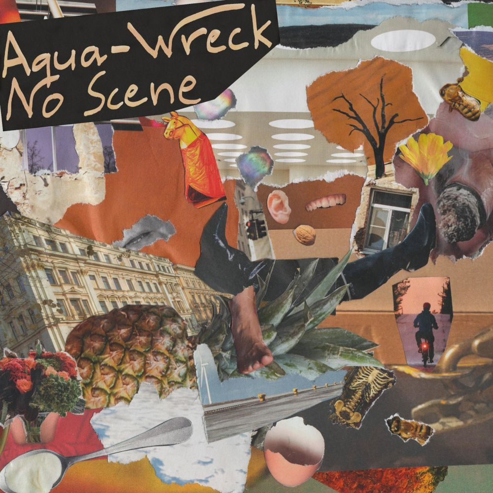
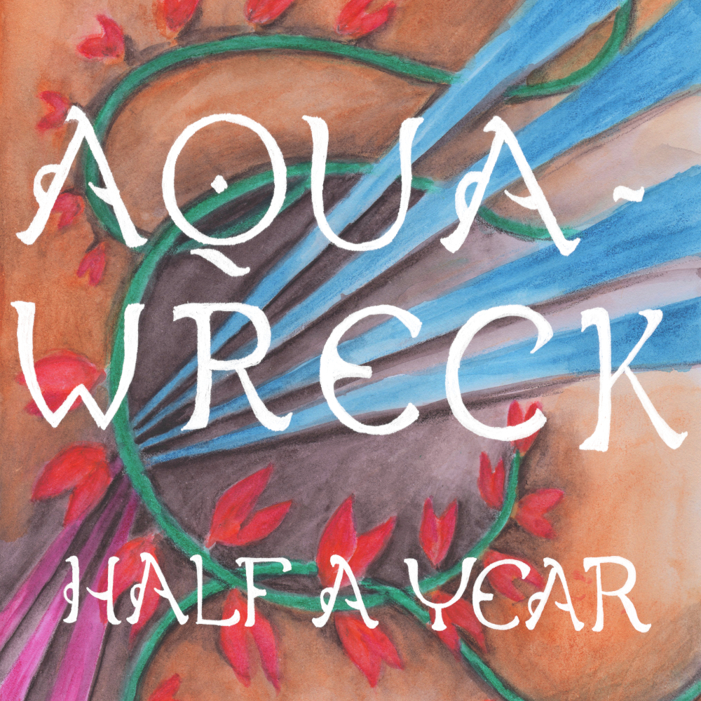

SIVUVALIKKO
ETUSIVU
BÄNDI
KEIKAT
JULKAISUT
KUVAT & VIDEOT
Julkaisut
Facade (albumi) 2024

No Scene (single) 30.12.2020
No Scene
So Sang the Finch

Half a Year (single) 26.11.2019
Half a Year
Slapping the Table (In Amazement)